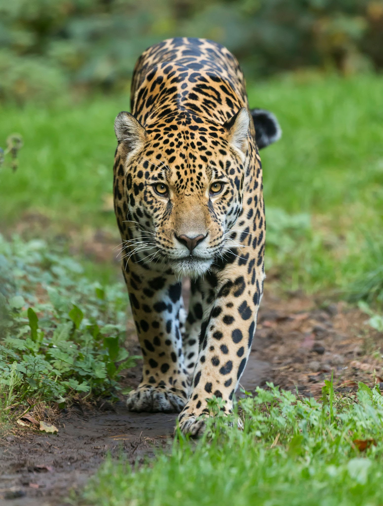

Notícias cidade
A fauna
A Onça Pintada
Por José Machado, da Agência Senado
A onça-pintada (português brasileiro) ou jaguar (português europeu) (nome científico: Panthera onca), também conhecida como onça-preta (no caso dos indivíduos melânicos), é uma espécie de mamífero carnívoro da família dos felídeos (Felidae) encontrada nas Américas. É o terceiro maior felino do mundo, após o tigre e o leão, e o maior do continente americano. Apesar da semelhança com o leopardo (Panthera pardus), a onça-pintada é evolutivamente mais próxima do leão (Panthera leo). Ocorre desde o sul dos Estados Unidos até o norte da Argentina, mas está extinta em diversas partes dessa região atualmente. Nos Estados Unidos, por exemplo, está quase extinta desde do início do século XX, mas ainda ocorre em algumas áreas do Arizona, Novo México e Texas. É encontrada principalmente em ambientes de florestas tropicais, e geralmente não ocorre acima dos 1 200 m de altitude. A onça-pintada está fortemente associada à presença de água e é notável como um felino que gosta de nadar.
É um felino de porte grande, com peso variando de 56 a 92 quilos, podendo chegar a 158 quilos, e comprimento variando de 1,12 a 1,85 m sem a cauda, que é relativamente curta. Fisicamente semelhante ao leopardo, dele se diferencia pelo padrão de manchas na pele e pelo maior tamanho. Existem indivíduos totalmente pretos. As onças pintadas possuem mandíbulas excepcionalmente fortes, apresentando as mais poderosas mordidas dentre todos os grandes felinos. Isso permite que ela fure a casca dura de répteis como a tartaruga e de utilizar um método de matar incomum: ela morde diretamente através do crânio da presa entre os ouvidos, uma mordida fatal no cérebro.
"A onça-pintada é um animal robusto e musculoso. Tamanho e peso variam consideravelmente: o peso normalmente está entre 56 a 96 quilos. Os maiores machos registrados pesavam até 158 quilos (tendo o peso de uma leoa ou tigresa), e as menores fêmeas chegavam a ter 36 quilos."
É um animal crepuscular e solitário. Caça através de emboscadas, sendo um importante predador no topo da cadeia alimentar e pode comer qualquer animal que seja capaz de capturar, desempenhando um papel na estabilização dos ecossistemas e na regulação das populações de espécies de presas. Porém, tem preferência por grandes herbívoros, podendo atacar o gado doméstico. Frequentemente convive com a onça-parda (Puma concolor), influenciando os hábitos e comportamento deste outro felino. A área de vida pode ter mais de 100 quilômetros quadrados, com os machos tendo territórios englobando o de duas ou três fêmeas. A onça-pintada é capaz de rugir e usa esse tipo de vocalização em contextos de territorialidade. Alcança a maturidade sexual com cerca de 2 anos de idade, e as fêmeas dão à luz geralmente a dois filhotes por vez, pesando entre 700 e 900 gramas. Em cativeiro, a onça-pintada pode viver até 23 anos, mais do que em estado selvagem.
A IUCN considera a espécie como "quase ameaçada", por sua ampla distribuição geográfica, mas suas populações estão em declínio, principalmente por causa da perda e da fragmentação do seu habitat. Entretanto, localmente ela pode estar em sério risco de extinção, como em áreas da América Central e do Norte e na Mata Atlântica brasileira. O comércio internacional de onças ou de suas partes é proibido, mas o felino ainda é frequentemente caçado por fazendeiros e agricultores na América do Sul. Apesar de seu número reduzido, a sua distribuição geográfica ainda é ampla e há boas chances de sobrevivência da espécie a longo prazo na Amazônia e no Pantanal. A onça-pintada faz parte da mitologia de diversas culturas indígenas americanas, incluindo as dos maias, astecas e guaranis e a sua caça ainda é uma atividade carregada de simbolismo, principalmente entre os pantaneiros.
Etimologia

A onça-pintada também é conhecida por pintada, onça-verdadeira, jaguar, jaguaretê, jaguarapinima, acanguçu, canguçu ou simplesmente onça. O termo onça origina-se do grego lygx, através do termo latino luncea e do termo italiano lonza. No Brasil, o nome onça-pintada é o mais utilizado, sendo que pintada é uma alusão à pelagem cheia de manchas e rosetas, ao contrário da outra onça, a onça-parda.
Jaguar origina-se do termo tupi îagûara, podendo ser traduzido como onça e até como cão. Com efeito, com a colonização europeia e a chegada dos cães ao continente americano, a palavra passou a ser também usada para referir-se aos cachorros; assim, adotou-se îagûareté ("onça verdadeira") para fazer referência exclusivamente à onça-pintada, diferenciando-a do cão, o que originou o termo de língua portuguesa jaguaretê. Yaguareté é um nome usado em países de língua espanhola em que há muitos descendentes dos guaranis, como a Argentina e Paraguai. Acanguçu e canguçu originam-se do termo tupi-guarani îagûarakangusu, que significa "onça de cabeça grande", por meio da composição entre îagûara ("onça"), akanga ("cabeça") e usu ("grande"). Jaguarapinima vem do tupi îagûara ("onça") e pinima ("pintada").
A designição pantera no nome científico, vem do latim, panthera. Panthera, em grego, é uma palavra para leopardo, πάνθηρ. A palavra é uma composição de παν- "todos" e θήρ vem de θηρευτής "predador", significando "predador de todos" (animais), apesar de que esta deve ser considerada uma etimologia popular. A palavra deve ter uma origem do Sânscrito, pundarikam, que significa tigre.
Taxonomia e evolução
A onça-pintada é o único membro atual do gênero Panthera no Novo Mundo. Filogenias moleculares evidenciaram que o leão, o tigre, o leopardo, o leopardo-das-neves e o leopardo-nebuloso compartilham um ancestral em comum exclusivo, e esse ancestral viveu entre seis e dez milhões de anos atrás apesar do registro fóssil apontar o surgimento do gênero Panthera entre dois e 3,8 milhões de anos atrás. Estudos filogenéticos geralmente mostram o leopardo-nebuloso como um táxon basal ao gênero Panthera.
Baseado em evidências morfológicas, o zoológo britânico Reginald Pocock concluiu que a onça-pintada é mais próxima ao leopardo. Entretanto, filogenias baseadas no DNA são inconclusivas à posição da onça-pintada em relação às outras espécies do gênero, mas existem dois cladogramas frequentemente observados: ora a onça-pintada é considerada mais próxima do leão, ora é considerada um grupo-irmão de um clado formado pelo leão e o leopardo. Fósseis de espécies extintas do gênero Panthera, como o jaguar-europeu (Panthera gombaszoegensis) e o leão-americano (Panthera atrox), mostram características tanto da onça-pintada quanto do leão. Análise do DNA mitocondrial apontam para o surgimento da espécie entre 280 e 510 mil anos atrás, bem depois do que é sugerido pelo registro fóssil, que considera seu surgimento há cerca de 1,5 milhão de anos.
Ancestrais
Apesar de habitar o continente americano, a onça-pintada descende de felinos do Velho Mundo. Há cerca de 2,87 milhões de anos, a onça-pintada, o leão e o leopardo compartilharam um ancestral comum na Ásia. No início do Pleistoceno, os precursores da atual onça atravessaram a Beríngia e chegaram à América do Norte: a partir daí alcançaram a América Central e a América do Sul.
A linhagem da onça-pintada se separou da linhagem do leão (que compartilham um ancestral comum exclusivo, sendo a espécie mais próxima da onça-pintada), há cerca de 2 milhões de anos. Existe o debate sobre se a Panthera gombaszoegensis seria uma subespécie da atual onça-pintada, o que poderia mudar a história evolutiva da onça, considerando que ela surgiu na África e não na Ásia.
Subespécies e variação geográfica
A última delineação taxonômica foi feita por Pocock em 1939. Baseado em origens geográficas e morfologia de crânio, ele reconheceu oito subespécies. Entretanto, ele não teve acesso a um número suficiente de espécimes para fazer uma análise crítica das subespécies, e expressou dúvida sobre a validade de várias delas. Uma reconsideração posterior reconheceu apenas três subespécies.
Estudos recentes não demonstraram a existência de subespécies bem definidas, e muitos nem reconhecem a existência delas. Existe uma variação clinal na morfologia da onça-pintada, entre a ocorrência sul e norte da espécie, mas a variação dentro das subespécies é maior do que entre elas e por isso não há garantia da existência das subespécies. Um estudo genético confirmou a ausência de divisões geográficas entre as populações, apesar de ter sido demonstrado que grandes barreiras geográficas, como o rio Amazonas, limitam o fluxo gênico entre as populações de onças. Um estudo subsequente caracterizou mais detalhadamente a variação genética e encontrou diferenças populacionais nas onças da Colômbia.
É um animal adaptável e pode ser encontrada em inúmeros ambientes altamente alterados pelo homem, principalmente em pastagens e canaviais. Pode alcançar altas densidades nesse locais se não caçada, sendo considerada uma praga em algumas ocasiões. É possível que o desmatamento para criação de pastagens possa ter favorecido a expansão da ocorrência da capivara em alguns locais. Frequentemente, pode ser encontrada em áreas urbanas, parques e até mesmo, áreas residenciais.
Melanismo
Polimorfismo na cor ocorre na espécie e variedades melânicas são frequentes, sendo a principal variação na pelagem encontrada em animais selvagens. Em indivíduos totalmente pretos, quando visto sob a luz e de perto, é possível observar as rosetas. Apesar de ser conhecida popularmente como onça-preta, é apenas uma variação natural, não sendo uma espécie propriamente dita.
A forma totalmente preta é mais rara que a forma de cor amarelo-acastanhado, representando cerca de 6 % da população, o que é uma frequência muito maior do que a taxa de mutação. Portanto, a seleção natural contribuiu para a frequência de indivíduos totalmente negros na população. Existem evidências de que o alelo para o melanismo na onça-pintada é dominante. Ademais, a forma melânica é um exemplo de vantagem do heterozigoto; mas dados de cativeiro não são conclusivos quanto a isso. Indivíduos albinos são muito raros, e foi reportada a ocorrência na onça-pintada, assim como em outros grandes felinos. Como é usual com o albinismo na natureza, a seleção natural mantém a frequência da característica próxima à taxa de mutação.